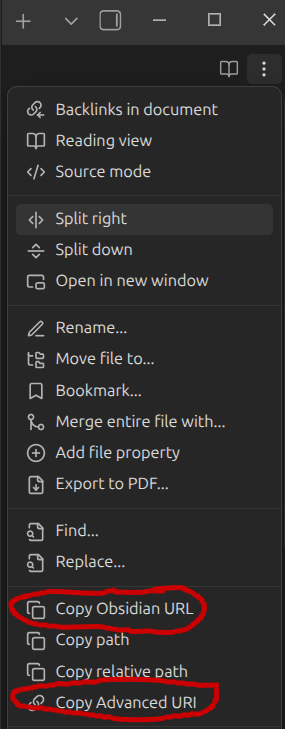

What is this?
Many apps (Google Tasks, GitHub, Slack, etc.) only make https:// links clickable. Obsidian uses obsidian:// links, which get ignored. This tool converts your Obsidian links to HTTPS links that redirect back to Obsidian.
Tip: Install the Obsidian plugin for instant hotkey access. This website is useful for manual conversion or if you don't have the plugin installed.
How to use
With plugin installed:
- In Obsidian: Press your hotkey (e.g.,
Cmd+Shift+L) - Paste link in Google Tasks, GitHub, Slack, etc.
Without plugin:
- In Obsidian: Click three dots (top right) → "Copy Obsidian URL" or "Copy Advanced URI" (either works)

Note: Advanced URI offers extra automation features (appending content, running commands), but for just opening notes, both work the same.
- Paste link below in "Convert Link" section
- Copy the HTTPS version and share it
How it works
- You share:
https://THIS_DOMAIN/open?... - Recipient clicks the link
- Browser redirects to
obsidian://open?... - Obsidian opens the note
Optional: Install plugin for instant link creation
Skip the manual conversion by installing the plugin:
- Download the plugin files from GitHub
- Copy the folder to your vault's
.obsidian/plugins/directory - Restart Obsidian and enable the plugin in Settings → Community plugins
- Set a hotkey in Settings → Hotkeys → "Copy HTTPS redirect link"
- Press your hotkey in any note to copy the link instantly
Security: Links contain vault and file names in the URL. Only share links to notes you're comfortable exposing the titles of. No note content is transmitted - just metadata to locate the note.
Convert Link
Build Link
Don't have an obsidian:// link? Build one from scratch.